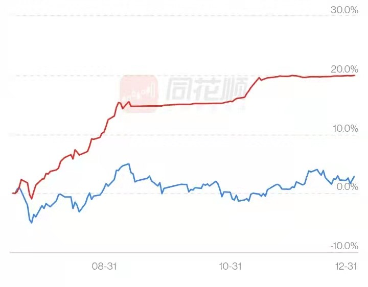

|  |
The picture on the left shows the yield curve of my convertible bond trading in the second half of 2021, which is 17.11% higher than that of the Shanghai Stock Exchange Index.
Convertible bonds are bonds that can be converted into stocks and the conversion rate has been agreed upon at the time of issue, so when the stock price rises, the bond price will rise at the same rate. But when the stock price drops, the
bond holder can get the principal and interest at maturity, avoiding the loss caused by the decline of the stock.
To my knowledge, convertible bonds in the Chinese market are currently the most friendly product to small individual traders.
My study on convertible bonds is just entry level, but due to the guarantee of principal and interest, I am not very worried about whether there is a temporary loss, and when I am busy, I am fine with not looking at my account for as long as I want. In fact, I have completely stopped paying attention to my account for a few months (as you can see, my yield curve has plateaued for a while due to my undivided attention on programming projects).
I am studying automated trading methods to save time in the market.
|